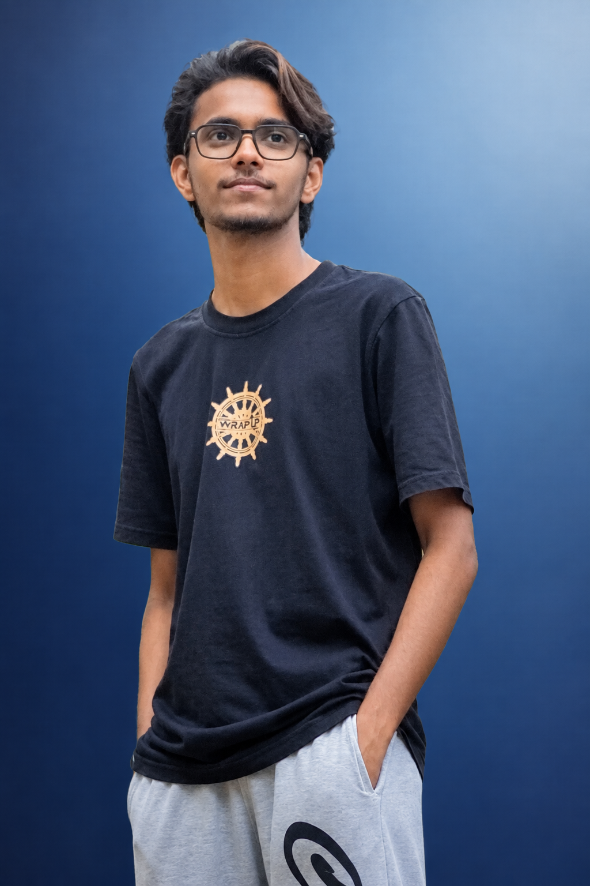

Turning ideas into visual stories.
I’m Vishal — a creative video editor and digital creator focused on cinematic visuals, clean design, smooth motion and engaging storytelling.

A little about me.
I enjoy taking raw footage and turning it into something that feels polished, cinematic and alive. My focus is on pacing, music, colour, typography, transitions and the small details that make a video feel professional.
Creative work.
From raw clips to finished visuals, I like keeping the design modern, clean and story-driven.
Video Editing
Premiere Pro workflows, pacing, sound design, transitions and cinematic storytelling.
Color & Look
Cinematic colour grading, contrast, skin tones and dreamy glow for a polished finish.
Visual Design
Posters, social media creatives, layouts, typography and modern visual identities.
Tools & strengths.
My creative workflow combines editing, colour, design and motion to build visuals that feel consistent from the first frame to the last.
From raw to refined.
Understand the footage
Select the strongest moments and build a clear visual direction.
Shape the story
Use rhythm, cuts, music and motion to keep every scene engaging.
Make it feel cinematic
Colour, sound, typography and subtle effects bring the final identity together.
Let's create something.
Have a video, design or creative idea? Let's turn it into a polished visual experience.
Get in touch ↗